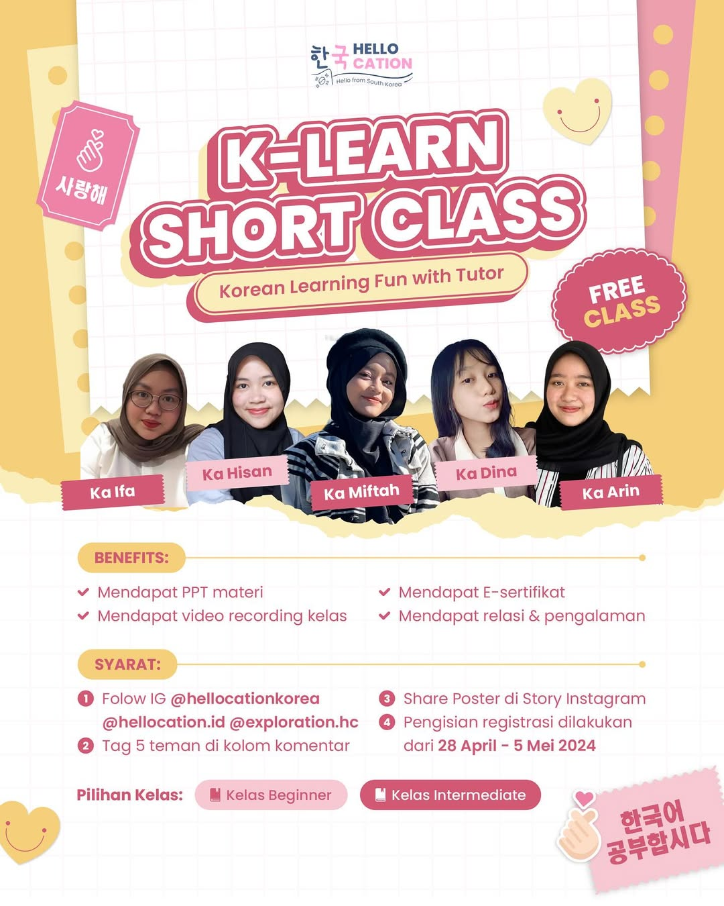
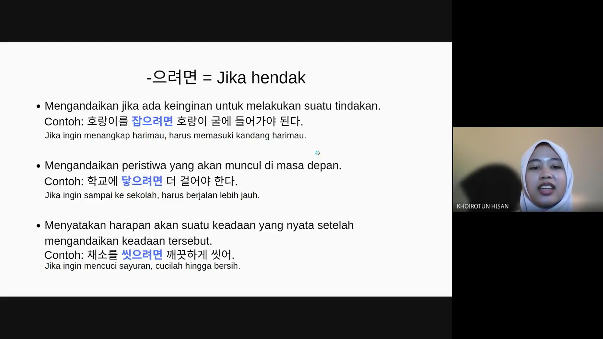

Korean Language Tutor Staff – HelloCation Korea
Pada periode Februari hingga Mei 2024, saya menjadi bagian dari tim pengajar di HelloCation Korea sebagai Korean Language Tutor Staff. Dalam peran ini, saya bertanggung jawab untuk mengembangkan materi pembelajaran sekaligus mengajar kelas bahasa Korea tingkat menengah yang diikuti oleh lebih dari 20 peserta.
Saya merancang kurikulum dan materi pembelajaran yang sistematis untuk level intermediate, mulai dari penyusunan topik mingguan, latihan percakapan, hingga pembuatan soal evaluasi. Penyusunan materi ini dilakukan agar pembelajaran tidak hanya fokus pada teori, tetapi juga pada kemampuan praktis seperti speaking, listening, dan penggunaan ekspresi sehari-hari yang relevan.
Selain mengajar kelas reguler, saya juga dipercaya menjadi pembicara dalam sebuah acara publik yang membahas bahasa Korea dan dihadiri oleh lebih dari 100 peserta. Dalam kesempatan tersebut, saya membawakan materi mengenai strategi efektif belajar bahasa Korea untuk pemula hingga tingkat menengah, serta berbagi pengalaman seputar tantangan dan tips dalam proses pembelajaran.
Pengalaman ini membantu saya mengembangkan kemampuan dalam curriculum development, public speaking, serta classroom management. Selain itu, saya semakin terlatih dalam menyampaikan materi secara jelas, interaktif, dan sesuai dengan kebutuhan peserta dengan latar belakang yang beragam.